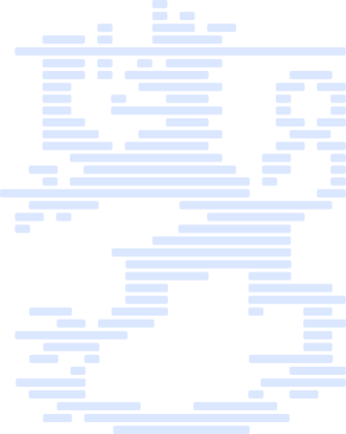

Johtava ohjelmistokehittäjä, DI (Aalto) · Kirkkonummen kunnanvaltuutettu
Vihreiden eduskuntavaaliehdokas · Uudenmaan vaalipiiri · 2027
Tavoitteenani on digitaalisesti itsenäinen Suomi, jossa talous, sivistys ja vapaus toimivat yhdessä tekoälyn aikakaudella.
Tutustu ohjelmaaniOlen Lauri Lavanti: neljän lapsen isä Kirkkonummelta, johtava ohjelmistokehittäjä ja kunnanvaltuutettu. Asetun ehdolle Uudenmaan vaalipiirissä, koska tekoälyä koskevat päätökset tehdään nyt ja ne sitovat Suomea vuosikymmeniksi. Haluan, että ne tehdään ymmärtäen, mitä ollaan ostamassa.
Sama muutos osuu kolmeen alueeseen yhtä aikaa — ja ne ratkaisevat, palveleeko talous ihmistä vai päinvastoin.
Kilpailukyky ei synny tuista vaan siitä, että toimintaympäristö on ennakoitava ja hankinnat eivät lukitse ostajaa paikalleen.
Julkinen raha ostaa liian usein riippuvuutta: kun tiedot sitoutuvat muotoon, josta ei pääse ulos, kilpailu loppuu sopimuksen allekirjoitukseen ja hinta nousee myöhemmin. Korjaus on tylsä — siirrettävyys hankinnan ehdoksi ja avoimet tiedostomuodot oletukseksi. Yrittäjyyden esteet ovat pääosin hallinnollisia, ja ne voi purkaa ilman että kenenkään turvasta tingitään.
Osaaminen on ainoa raaka-aine, jota ei voi tuoda. Koulutus on investointi työvoimaan — ja samalla se, mikä pitää ihmiset mukana muutoksessa.
Kun työn sisältö muuttuu kesken uran, osaamisen päivittäminen ei voi olla kertaluonteinen projekti. Varhaiskasvatus tarvitsee kilpailukykyisen palkan, erityisopetus riittävät resurssit ja korkeakoulut pitkäjänteisen rahoituksen. Tämä on talousargumentti ennen kuin se on mikään muu: tuottavuus syntyy siellä, missä osaaminen on.
Yksityisyys ei ole jarru kehitykselle. Se on demokratian edellytys — ja konkreettinen epäily ennen skannausta on oikeusvaltion minimi.
Vahvat instituutiot suojaavat kaikkien etuja, myös silloin kun se on epämukavaa. Perusoikeudet on kirjoitettu perustuslakiin ennen kuin ne kirjoitettiin lakiin, ja teknologia ei ole peruste niistä poikkeamiselle. Käytännössä tämä tarkoittaa, että valvontavaltuuksia arvioidaan sen mukaan, mitä ne tekevät silloin kun niitä käytetään väärin.

Kun nämä kolme toimivat yhdessä, syntyy maa, joka käyttää teknologiaa omilla ehdoillaan: voi vaihtaa toimittajaa, kouluttaa omat osaajansa ja pitää perusoikeudet voimassa myös paineen alla. Se ei tarkoita eristäytymistä vaan sitä, ettei riippuvuus ole kenenkään yksittäisen toimijan käsissä.
Yli vuosikymmenen ajan olen ollut tekemässä turvallisia ohjelmistoja ja pankkipalveluja — järjestelmiä, joissa virheellä on hinta ja luottamus on toiminnan ehto. Kunnanvaltuustossa olen nähnyt saman asian toiselta puolelta: miten päätös, joka näyttää tekniseltä, ratkaisee vuosiksi sen, mihin rahat riittävät.

Digitaalisesti itsenäistä Suomea: taloutta, joka palvelee ihmistä, koulutusta, joka pitää kaikki mukana, ja perusoikeuksia, jotka kestävät myös teknologian painetta.
Käytännössä painopisteet ovat julkisen hankinnan uudistus, yrittäjyyden edellytykset ja selkeät rajat tekoälyn käyttöönotolle oikeusvaltion suojaamiseksi.
Yrittäjyyden esteet ovat pääosin hallinnollisia, ja ne voidaan purkaa ilman että kenenkään turvasta tingitään.
Kevyempi yhtiömuoto pienelle toiminnalle, ennakoitava sääntely ja julkisen IT-hankinnan avaaminen niin, että myös pienet suomalaiset toimijat voivat tarjota.
Sitä, että Suomi voi vaihtaa toimittajaa, korjata järjestelmänsä ja päättää omista tiedoistaan silloinkin, kun kansainvälinen tilanne muuttuu.
Se rakentuu arkisista päätöksistä: avoimet tiedostomuodot, siirrettävyys hankintaehtona, eurooppalaiset kumppanit ja riittävä oma osaaminen.
Koska tekoälyä koskevat päätökset tehdään nyt, ja ne sitovat Suomea vuosikymmeniksi.
Lainsäätäjän on ymmärrettävä, mikä teknologiassa on väistämätöntä ja mikä on valinta. Ilman sitä ymmärrystä sääntely osuu joko liian myöhään tai väärään kohtaan.
Digitaalinen itsenäisyys rakentuu arjen valinnoissa. Viisi konkreettista keinoa — ja yksi, joka on niitä kaikkia tärkeämpi.
Caruna vaihtaa omistajaa, mutta sähköverkon tulevaisuuden ratkaisee sääntely — ei omistaja.
Liputus on tärkeä, mutta yhdenvertaisuus vaatii myös konkreettisia tekoja syksyn talousarviossa.
Vaihdavihreisiin.fi-kampanja kutsuu liberaalit ja sosiaaliliberaalit Vihreisiin — puolueeseen, jossa arvoista ei tarvitse tinkiä.
Markkinatalous on tehokkain tunnettu tapa jakaa resursseja — ei kamreritaloutta, vaan aitoja markkinoita.
Sopimuksesta poistuminen ei muuta sopeutuksen määrää — se poistaa mahdollisuuden vaikuttaa siihen, miten sopeutus tehdään.
Analyysejä teknologian ja talouden kehityskuluista sekä arvioita niiden vaikutuksista yhteiskuntaan.
Voit perua uutiskirjeen koska tahansa. Lisätietoja: tietosuojaseloste.